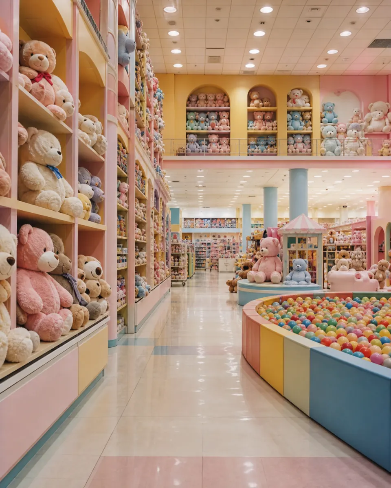

Отдел мягких друзей
Наши ростовые плюшевые медведи такие огромные и теплые! Обними их покрепче — они так давно ждали именно тебя. Некоторые из них умеют обнимать в ответ.
Твоя любимая игрушка уже заждалась.
Оставь родителей на фуд-корте, сними обувь и отправляйся в бесконечные отделы чистой радости!
Игрушки ждут
Помнишь тот самый огромный магазин из детства? Тот, где полки уходят в самое небо, а в яме с разноцветными шариками можно плавать часами. В ТЦ «Детский Жир» сбываются самые сладкие мечты.
Оставь родителей на фуд-корте, сними обувь и отправляйся в бесконечные отделы чистой радости! Наши консультанты всегда рядом. Иногда даже слишком рядом.

Наши ростовые плюшевые медведи такие огромные и теплые! Обними их покрепче — они так давно ждали именно тебя. Некоторые из них умеют обнимать в ответ.
Испытай удачу! Наша блестящая металлическая клешня всегда достает самый лучший приз.
Если на дне ямы с цветными блоками ты почувствуешь случайное касание — не пугайся. Это наша фирменная программа эмоциональной поддержки. Давай обнимемся!
Не включайте свет в отделе винтажных кукол. Игрушки не любят, когда их будят. Используйте фонарик.
Гостевая оболочка не предназначена для просмотра фасовочного регламента точки сбыта. Перейдите в служебный файл.
Открыть протокол фасовки